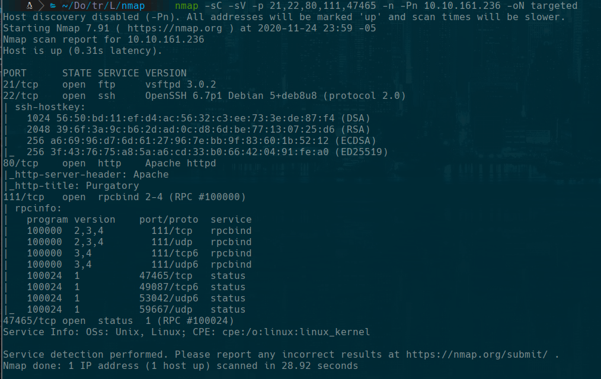

TryHackMe
Easy
Linux
Web
FTP
Steganography
Lian_Yu
Enumeracion web y FTP para encontrar archivos con esteganografia y credenciales ocultas.
cat4clysm
Herramientas utilizadas
nmap
gobuster
steghide
Scanning
root@kali:~$
nmap -sC -sV -p 21,22,80,111,47465 -n -Pn 10.10.161.236 -oN targeted
Lecciones aprendidas
- La enumeracion de directorios web puede revelar paginas ocultas con informacion sensible.
- Las imagenes pueden contener datos ocultos mediante esteganografia.
- FTP anonimo puede exponer archivos del servidor sin necesidad de credenciales.